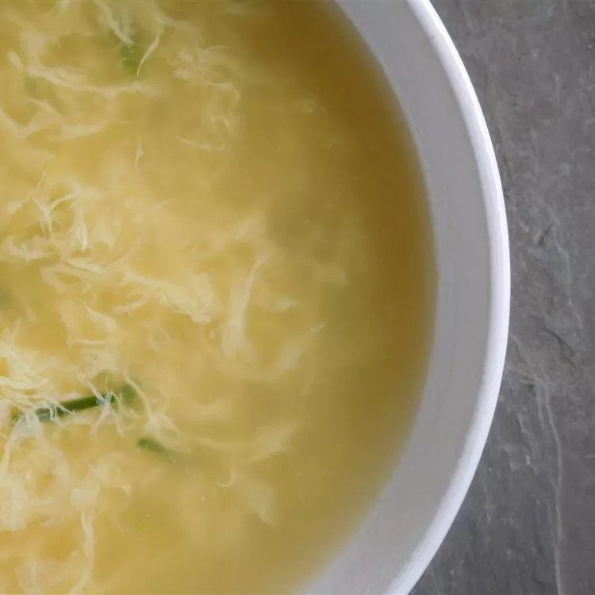

Restaurant Style Egg Drop Soup

Description
This chicken egg drop soup is born from a love of the soup, many trips to my favorite Chinese restaurant, and many questions. This variation is the result. Simplicity is the key. The soup can be reheated or frozen and reheated.
Ingredients
- 4 cups chicken broth, divided
- 2 tablespoon chopped fresh chives
- 1/4 teaspoon salt
- 1/8 teaspoon ground ginger
- 1 1/2 tablespoons cornstarch
- 2 eggs
- 1 egg yolk
Steps
- Reserve 3/4 cup of chicken broth, and pour the rest into a large saucepan. Stir in chives, salt, and ginger; bring to a rolling boil. Stir reserved 3/4 cup of broth and cornstarch until smooth. Set aside.
- Whisk eggs and egg yolk together in a small bowl with a fork. Using a fork, drizzle eggs, a little at a time, into boiling broth. Eggs will cook immediately. Stir in cornstarch mixture gradually until soup reaches desired consistency.